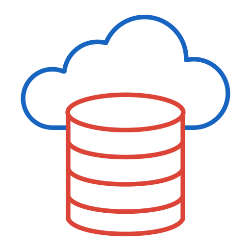
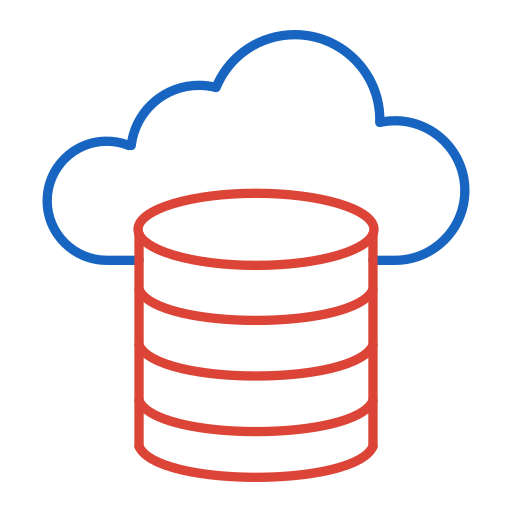

À propos de moi

Je suis un ingénieur data passionné, spécialisé en pipelines ETL, Big Data et Cloud. Fort d’une expérience dans le secteur de la santé et du retail (IQVIA, Aristid, Oncopole), je conçois des solutions data optimisées.


 
